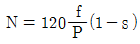
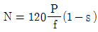
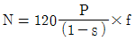
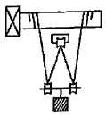

천장크레인운전기능사 (2012-04-08 기출문제)
1과목: 임의 구분
1. 천장크레인에서 주권, 보권 등에서 사용하는 권과 방지장치는?
- 리미트(Limit)스위치
- 오일게이지
- 집중그리스펌프
- 와이어로프
(정답률: 89%)

2. 크레인 거더(girder)의 캠버에 관한 설명 중 틀린 것은?
- 거더는 동, 정, 상, 하 수평의 각 하중에 견디도록 리머볼트로 견고하게 체결되어 있다.
- 크레인의 박스 거더는 캠버를 고려하여야 한다.
- 캠버는 거더의 중앙에서 최대치가 된다.
- 캠버는 하중을 안전하게 들기 위함이며 크레인에 수명에는 관계없다.
(정답률: 78%)
3. 천장크레인 운전 중 리미트 스위치가 할 수 있는 역할은?
- 운전 중 비상경고등의 역할
- 권상장치 등 각 장치의 운전 중 급출발 및 급제동 장치의 역할
- 주행 등 각 장치의 스피드 조절스위치 역할
- 권상, 주행, 횡행 등 각 장치의 운동에 대한 과행의 방지하는 역할
(정답률: 80%)
4. 다음 중 권상장치의 동력전달 순서로 맞는 것은?
- 전동기→기어감속기→커플링→드럼→와이어로프→훅
- 전동기→커플링→드럼→기어감속기→와이어로프→훅
- 전동기→커플링→기어감속기→드럼→와이어로프→훅
- 전동기→기어감속기→드럼→커플링→와이어로프→훅
(정답률: 58%)
5. 다음 설명 중 틀린 것은?
- 브레이크 휠(Brake Wheel)면의 요철이 2mm가 되면 평활하게 다듬어야 한다.
- 주행용 브레이크는 오일 디스크 브레이크 또는 트러스트 브레이크를 사용한다.
- 권상장치의 브레이크는 오일 압상 브레이크를 사용하여 충격을 완화 시켜준다.
- 횡행장치의 브레이크는 스러스트 브레이크를 사용한다.
(정답률: 43%)
6. 산업안전보건법상 크레인 제품심사 시 적용하는 과부하방지장치의 하중시험 값으로 적합한 것은?
- 정격하중의 100% 하중
- 정격하중의 110% 하중
- 정격하중의 120% 하중
- 정격하중의 125% 하중
(정답률: 80%)
7. 권상작업 중 훅의 계속 권상되지 않을 때 우선 점검하여야 할 곳으로 맞는 것은?
- 사이렌
- 권상 리미트 스위치
- 주행 리미트 스위치
- 횡행 리미트 스위치
(정답률: 85%)
8. 크레인에서 사용하는 훅의 일반적인 재질은?
- 기계구조용 탄소강
- 구조용 고장력 탄소강
- 용접 구조용 압연강
- 리벳용 원형강
(정답률: 80%)
9. 정격하중에 대한 설명으로 맞는 것은?
- 훅의 무게를 제외한 순수 취급 하중
- 평상시 주로 사용하는 취급 하중
- 훅의 무게를 포함한 취급 하중
- 주권과 보권이 표시한 권상능력의 합
(정답률: 76%)
10. 스러스트 브레이크의 오일 교환주기는 몇 개월인가?
- 1개월
- 3개월
- 6개월
- 12개월
(정답률: 64%)
11. 천장크레인에서 주행레일의 진직도는 전 주행길이에 걸쳐최대 얼마 이내이어야 하는가?
- 20㎜ 이내
- 10㎜ 이내
- 2㎜ 이내
- 5㎜ 이내
(정답률: 66%)
12. 드럼에 감기는 로프와 드럼과의 각도에 대하여 설명한 것 중 틀린 것은?
- 홈이 있는 드럼에 와이어로프가 감길 때의 방향과 와이어로프의 방향과 각도는 4도 이내가 되어야 한다.
- 홈이 없는 드럼에 와이어로프가 감길 때는 각도는 2도 이내가 되어야 한다.
- 와이어로프가 드럼에 감길 때 또는 역회전으로 감기는 경우에 급격히 꺾이거나 예리한 모서리에 마찰되지 않는 구조이어야 한다.
- 드럼에 와이어로프가 감길 때의 각도는 최대한 꺾이도록 높은 각도를 유지하는 것이 좋다.
(정답률: 70%)
13. 전자 브레이크의 전자석 부분 과열 원인 중 틀린 것은?
- 전원 전합의 강하
- 철심이 완전히 흡착하지 않음
- 권선의 부분단락
- 브레이크 슈(shoe)의 마모
(정답률: 53%)
14. 크레인 레일에 있어서 30kgf 레일의 표준길이(m)는?
- 15
- 20
- 25
- 30
(정답률: 38%)
15. 크레인의 와이어 드럼 홈 부위의 사용 마모한도는 주철제 드럼의 경우 로프 지름의 몇 % 이내 인가?
- 10%
- 15%
- 18%
- 25%
(정답률: 28%)
16. 완충장치(BUFFER)의 종류로서 알맞지 않은 것은?
- 유압 BUFFER
- 고무 BUFFER
- 강철 BUFFER
- 스프링 BUFFER
(정답률: 78%)
17. 천장크레인의 구조에 해당 되지 않는 것은?
- 거더
- 새들
- 권상장치
- 속도감응 조향장치
(정답률: 73%)
18. 차륜에 대하여 설명한 것 중 틀린 것은?
- 차륜의 재질은 주철, 주강, 특수주강이다.
- 천장크레인 차륜은 보통 양 플랜지의 것이 사용된다.
- 차륜의 직경은 균일하며 답면 및 플랜지는 열처리가 되어 있다.
- 차륜에는 종동륜만 있다.
(정답률: 81%)
19. 천장크레인에 대한 설명 중 틀린 것은?
- 휠베이스(wheel base)는 스팬(span) 길의 8배 이상이 되어야 좋다.
- 차륜은 구동륜과 종동륜으로 구분한다.
- 주행레일 유지 보수시 이물질이 있는지 확인하고 제거한다.
- 새들(saddle) 양끝에는 주행 완충용 스톱퍼를 설치하여 충격을 완화시켜 준다.
(정답률: 71%)
20. 천장크레인의 3운동이 아닌 것은?
- 주행
- 회전
- 권상
- 횡행
(정답률: 85%)
2과목: 임의 구분
21. 천장크레인에서 동력전달시 축의 편차가 있을 때 부적합한 커플링은?
- 유니버셜 커플링
- 플렉시블 커플링
- 플랜지 커플링
- 그리드 커플링
(정답률: 33%)
22. 나사(SCREW) 중 일반기계의 체결용으로 쓰이는 나사는?
- 사다리꼴 나사
- 톱니 나사
- 사각 나사
- 삼각 나사
(정답률: 55%)
23. 전동기의 소손 원인 중 옳지 않은 것은?
- 과부하
- 절연불량
- 베어링 불량
- 와이어로프 단선
(정답률: 70%)
24. 일정시간을 두고 다음 동작으로 이행할 때에 사용하는 것은?
- 무전압 보호장치
- 타임 릴레이
- 역상보호 계전기
- 전자 접촉기
(정답률: 77%)
25. 감전 또는 감전 예방에 대한 설명으로 가장 거리가 먼 것은?
- 감전의 피해정도는 전류의 크기와 통전시간에 따라 다르다.
- 정전시나 점검수리에는 반드시 전원스위치를 올린다.
- 50mA 이상의 전류가 인체에 흐르면 상당히 위험하다.
- 건조한 옷, 고무장갑 등을 착용하면 좋다.
(정답률: 82%)
26. 메사테스터는 무엇을 측정하는 것인가?
- 전기 전도도
- 전력량
- 전압
- 전기 절연저항
(정답률: 67%)
27. 집전장치에서 불꽃(Spark) 발생의 원인이 아닌 것은?
- 접촉점에서 흐르는 전류가 정격 이상일 때
- 접촉점간의 전압이 높을 때
- 접촉면의 거칠 때
- 직류보다 교류에서 많다.
(정답률: 80%)
28. 잇수가 20인 작은 기어와 500rpm으로 회전할 때 이와 맞물린 큰 기어의 회전수를 100rpm으로 하려면 큰 기어의 잇수는?
- 120
- 100
- 800
- 60
(정답률: 60%)
29. 천장크레인의 전원공급은 트롤리선으로 한다. 다음 설명 중 틀린 것은?
- 주행용 트롤리선은 약 6m 간격마다 애자로 지지한다.
- 경동원형의 트롤리선은 약 10m 간격마다 애자로 지지한다.
- 트롤리선의 재질은 포금, 카본, 철 등이 사용된다.
- 트롤리선의 종류는 경동원형, 앵글, 레일, 홈붙이 트롤리선 등이 있다.
(정답률: 52%)
30. 크래브를 급정지할 경우의 영향으로 옳지 않은 것은?
- 운반물의 횡방향으로 흔들리며 로프에 나쁜 영향을 미친다.
- 충격을 받아 크레인에 무리가 간다.
- 주행차륜에는 별로 영향을 미치지 않는다.
- 크래브가 충격을 받는다.
(정답률: 65%)
31. 운전자 안전수칙을 설명한 것 중 틀린 것은?
- 운반물이 흔들리거나 회전하는 상태로 운반해서는 안된다.
- 운반물은 작업자 상부로 운반할 수 없으며 직각운전을 원칙으로 한다.
- 운전석을 이석할 때는 크레인을 정지된 그 자리에 정지시킨 후 훅을 최대한 내려놓는다.
- 옥외 크레인은 강풍이 불어올 경우 운전 및 옥외 점검정비를 제한한다.
(정답률: 70%)
32. 축의 원주를 4~20개로 등분하여 키를 깎아 붙인 것과 같이 만들어 단독 키보다 훨씬 큰 힘을 전달할 수 있으며 내구력이 큰 키는?
- 성크 키
- 접선 키
- 스플라인
- 안장 키
(정답률: 55%)
33. 회로의 전압을 측정하는데 적합한 계기는?
- 전류테스터
- 저항측정기
- 메가테스터
- 멀티테스터
(정답률: 55%)
34. 천장크레인으로 물건을 운반할 때 주의할 점으로 틀린 것은?
- 경우에 따라서 정격하중 무게보다 약간 초과할 수 있다.
- 적재물이 떨어지지 않도록 한다.
- 로프의 안전여부를 점검한다.
- 운반 중 작업자의 위치에 주의한다.
(정답률: 86%)
35. 권선의 변환수리를 행하였을 때 잘못해서 계자의 회전방향을 반대로 결선하면 역전될 위험이 있다. 이 경우 회로를 자동적으로 차단시키는 장치는?
- 칼날형 개폐기
- 타임 릴레이
- 역상 보호 계전기
- 무전압 보호장치
(정답률: 80%)
36. 교류 전자 브레이크(A.C magnetic brake)는 제동토크가 무여자시의 스프링과 가동 철심의 자체중량에 의해 발생되는 압력으로 브레이크 드럼을 가압하여 제동하는 방식이다. 라이닝 두께가 몇 % 감소되면 스트로크를 조정해야 하는가?
- 10~20%
- 20~30%
- 30~40%
- 40~50%
(정답률: 65%)
37. 전동기 회전수를 구하는 계산식은? (단, N : 회전수, f : 주파수, P : 극수, s : slip)




(정답률: 65%)
38. 오일 교환 시의 주의사항으로 적당치 않은 것은?
- 구름 베어링은 경유 또는 백등유로 청소 후 압축공기로 이물질을 제거한다.
- 구름 베어링 하우징의 엔진오일 충진량은 1/2~3/4 정도가 좋다.
- 개방기어에는 경유로 잘 닦은 후 새기름을 바른다.
- 기어박스인 경우 경유로 잘 닦은 후 건조 시킨 후 새 기름을 주입한다.
(정답률: 54%)
39. 베어링의 온도가 상승하는 원인과 관계없는 것은?
- 속도계수가 윤활제의 한계를 초과하고 있을 경우
- 베어링 기본하중에 비하여 사용하중이 너무 큰 경우
- 윤활제의 점성이 낮은 경우
- 베어링의 조립 또는 베어링하우징 제작 불량인 경우
(정답률: 59%)
40. 하역 작업을 시작하기 전에 점검해야 할 사항과 가장 거리가 먼 것은?
- 주행로상 및 크레인 주위에 장애물 유무 여부
- 급유 상태
- 볼트, 너트 및 엔드 플레이트의 이완 여부
- 차륜의 마모 및 진동, 소음 상태
(정답률: 54%)
3과목: 임의 구분
41. 그림에서 240톤의 부하물을 들어 올리려 할 때 당기는 힘은 몇 톤인가? (단, 마찰계수 및 각종효율은 무시한다.)

- 60
- 80
- 210
- 240
(정답률: 67%)
42. 권상용 드럼에 와이어로프를 설치하는 방법 중 맞지 않는 것은?
- 안전계수가 5 이상인 와이어로프를 사용한다.
- 로프를 드럼에서 최대로 풀었을 때 최소 1가닥은 남아야한다.
- 와이어로프 끝은 시징(Seizing)하여 풀리지 않도록 한다.
- 로프가 벗겨지지 않게 누르고 볼트로 조인 것이 로프 클램프(Rope Clamp)이다.
(정답률: 75%)
43. 와이어로프의 꼬임의 종류가 아닌 것은?
- 보통 Z꼬임
- 보통 S꼬임
- 보통 Y꼬임
- 랭Z 꼬임
(정답률: 74%)
44. 와이어로프의 단말 체결방법 중 가장 효율적인 것은?
- 심블(Thimble)
- 소켓(Socket)
- 웨지(Wedge)
- 클립(Clip)
(정답률: 59%)
45. 매다는 체인에서 점검해야 할 사항이 아닌 것은?
- 마모
- 변형
- 균열
- 킹크
(정답률: 62%)
46. 긴 환봉의 줄걸이 작업방법으로 가장 바람직한 것은?
- 1줄걸이
- 2줄걸이
- 3줄걸이
- 4줄걸이
(정답률: 73%)
47. 와이어로프의 규격의 규정된 한국산업표준은?
- KSD 3514
- KSH 3514
- KSW 3514
- KSK 3514
(정답률: 72%)
48. 4.8톤의 부하물을 4 줄 걸이로 하여 각도 60°로 매달았을 때 한쪽 줄에 걸리는 하중은 약 몇 톤인가?
- 0.69
- 1.23
- 1.39
- 1.46
(정답률: 64%)
49. 운전자가 경보기를 울리거나 한쪽 손의 주먹을 다른 손의 손바닥으로 2~3회 두드릴 경우의 수신호의 내용은?
- 신호불명
- 이상발생
- 기다려라
- 물건걸기
(정답률: 65%)
50. 와이어로프로 줄걸이 하는 방법에 관한 설명 중 옳지 않은 것은?
- 각진 예리한 물건을 이송할 때는 로프가 손상되지 않도록 다른 물질을 대어 로프를 보호한다.
- 둥근 물건은 2중 걸이를 하여 미끄러지지 않도록 한다.
- 줄걸이 각도는 60° 이내로 하며 30~45° 이내로 하는 것이 좋다.
- 주권과 보권을 동시에 사용해서는 안 된다.
(정답률: 47%)
51. 안전을 위하여 눈으로 보고 손으로 가리키고, 입으로 복창하여 귀로 듣고, 머리로 종합적인 판단을 하는 지적확인의 특성은?
- 의식을 강화한다.
- 지식수준을 높인다.
- 안전태도를 형성한다.
- 육체적 기능수준을 높인다.
(정답률: 60%)
52. 산업안전의 의미를 설명한 것으로 틀린 것은?
- 외과적인 상처만을 말한다.
- 사고가 없는 상태를 뜻한다.
- 위험이 없는 상태를 뜻한다.
- 직업병이 발생되지 않는 것을 말한다.
(정답률: 62%)
53. 소화 설비 선택 시 고려하여야 할 사항이 아닌 것은?
- 작업의 성질
- 작업자의 성격
- 화재의 성질
- 작업자의 환경
(정답률: 77%)
54. 운반 시 안전 수칙으로 틀린 것은?
- 운반차는 규정속도를 지킬 것
- 운반시 시야를 가리지 않을 것
- 승용석이 없는 운반차에는 승차하지 말 것
- 긴 물건에는 중간에 표지를 단 후 운반할 것
(정답률: 60%)
55. 기계설비에서 위험점 방호방법의 종류가 아닌 것은?
- 격리형 방호장치
- 덮개형 방호장치
- 기능적 방호장치
- 접근 거부형 방호장치
(정답률: 56%)
56. 연소 조건에 대한 설명으로 틀린 것은?
- 발열량이 적은 것일수록 타기 쉽다.
- 산화되기 쉬운 것일수록 타기 쉽다.
- 산소와의 접촉면이 클수록 타기 쉽다.
- 열전도율이 적은 것일수록 타기 쉽다.
(정답률: 42%)
57. 안전관리 측면에서 수공구로 인한 재해의 원인이 아닌 것은?
- 잘못된 공구 선택
- 공구의 수량 파악
- 공구의 점검 소홀
- 사용법의 미 숙지
(정답률: 78%)
58. 낙하, 비래, 추락, 감전으로부터 근로자의 머리를 보호하기 위하여 착용하여야 할 안전모는?
- A형
- BC형
- ABC형
- ABE형
(정답률: 61%)
59. 산업안전∙보전표지의 분류 명칭이 아닌 것은?
- 금지표지
- 경고표지
- 통제표지
- 안내표지
(정답률: 48%)
60. 스패너를 사용하는 방법으로 옳은 것은?
- 스패너를 해머 대신 사용한다.
- 스패너의 규격이 너트 규격보다 큰 것을 사용한다.
- 너트에 스패너를 올바르게 끼우고 앞으로 당기면서 사용한다.
- 스패너의 자루에 파이프를 넣어 지렛대 역할을 하도록하여 사용한다.
(정답률: 85%)